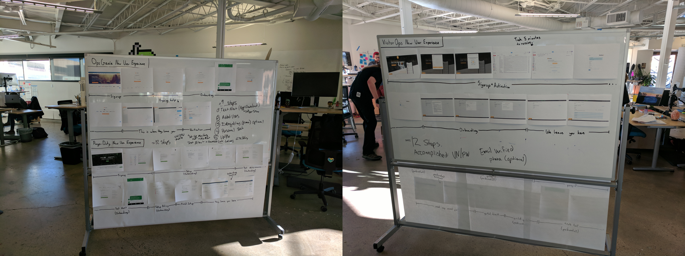

Designing onboarding that sells
Onboarding is often introduced as a process of introducing a tool or service to someone. This is partially true, but I think onboarding is mostly about helping people new to your service achieve their (service-relevant) goals. This is the same approach good sales people use: they know that being at the service of customers will result in that customer buying.
Most onboarding today (circa 2018) takes one of two approaches, and both of these approaches aim at helping customers navigate their way around a product:
- A swipe-able or click-able "slide show" which are common in mobile apps
- A "feature tour" which point out parts of the interface with a tooltip

Zendesk's feature tour critiqued by Sam Hulick
These approaches both (generally) fail to address the true problems the customer came to solve. Both have their place, such as announcing a new feature or demonstrating new navigation, but are rarely useful in showing value to brand new users who are trying to accomplish a few basic goals.
Onboarding approaches that work focus on solving the problems the of customers. At a practical-level, this means helping the customer experience core product value with your service early and oftenin their customer journey (see also: Brian Balfour on SaaS product growth).
Our poor first run experience was negatively impacting our conversion rate

Our old conversion funnel
Our company provides an on-call solution for ops, devops and development teams. This means that it monitors any number of external monitoring tools (like New Relic, Datadog, Icinga, and 100+ more) and alerts “on-call” users if their monitoring tools are sending out alerts. It additionally has a workflow function for those alerts (known in-aggregate as “incidents”), and 2-way chat integrations with tools like Slack.
We knew that our trial experience was poor compared to our competitors. This came not only from internal sources, but from trial abandonment feedback — people didn’t know what to do once they were in our app, didn’t know where to go, and wasn’t sure what to do next.
We mapped out our funnel to identify where users were falling off. Like many conversion funnels, it had several gaps both at the beginning of the trial and throughout the experience.
What we did know is that we were losing about 15% of our users before they ever got through the front door.
Once they did get in, about 20% would ultimately become a customer. This is actually an excellent paid conversion stat, but keep in mind that we had a well-staffed (and frankly amazing) sales and support team.
We compared our current registration and onboarding with competitors
Our new user experience vs. our competitor's
The best place to start when trying to fix a flow like this is to map out the flow, preferably some place public. It’s also helpful to map competitor registration and onboarding flows. This provides a visualization of the entire flow for the team, and make comparisons between the competitor approaches.
Another benefit of this approach is that the flow is visible to people outside of the product team. This is a great way to setup conversations with other teams in the company who work directly with customers. Making the work visible also spurs ad-hoc discussions with people you may not have considered in the research process.
Why people bought our product in the first place

A sales exec on a sales call
Most product teams are focused on new feature development within an existing product and customers. This means that they primarily address shortcomings within the product to reduce problems for current customers, but don’t spend much time deeply explore why people buy their product in the first place. This is a genuine shame, because why someone buys (or doesn’t buy) your product can provide a wealth of data about their motivations.
We first gathered qualitative data by speaking separately with our sales team and support teams.
Sales works with customers on the front-end: they first get in touch with customers when they signup or request a demo, work with them through the trial process, and continue to keep in touch with them after they close the sale. Support/ops helps customers setup their account, integrate the their existing tools, and setup their schedule.
Sales and support/ops taught us not only why people bought our product, but likely factors for success, and where they stumbled along the way:
- Most people were trialing the product as a part of a team, not on their own, and tended to have different functions and motivations for using the app. Generally speaking, we had two classes of users: integrators (who hooked up their monitoring tools) and schedulers (who created the on-call rotation). This meant that they had different support and sales needs.
- They were trialing us alongside our competitors. Some tools have a “streaker”, where the company already has an established product they are using, and someone in the company champions a challenger they had begun using on their own (think Trello, Airtable, etc.). With our product, it was almost always a team initiatives to find a solution alongside our competitors.
- Our mobile apps were superior to our competitors. Our company was built to be mobile-first, but our competitors apps were slow and poorly designed. Most people interact only when their on-call, which often means not in front of their computer, so this was a huge differentiator.
- Our level of service was a differentiator. As I mentioned, we have an outstanding sales and support team, which our competition simply doesn’t. We also involved customers in the product development process.
Sales and ops also mentioned that people had a number of “aha!” moments at a few specific points in their new trial experience:
- When they received their first alert on the app or via text message. This provided an example of the experience that someone would be seeing in the middle of the night when they were paged. It gave them an idea of our responsiveness as a system and the workflow experience.
- When they could successfully integrate their monitoring tools. This often went hand-in-hand with their first alert. Experiencing their monitoring systems alerting ours helped visualize our systems working with ours.
- When they were able to see their team on-call. This seemed to verify that their current on-call philosophy matched our product’s scheduling. We later learned that scheduling frustrations was a major reason for people churning-out
- When they were able to add runbooks and annotations to their alerts. Runbooks provide steps for an on-call responder to follow if a specific class of problem pops up. Annotations are supporting information that can be tacked on to specific alerts, such as activity graphs or links to the alerting service.
Combining qualitative findings with conversion metrics

Our engagement timeline graph cohorted by quarter
We combined this with sales conversion data from our data team. This provided context for the qualitative data from sales and support:
- 40% converted to paid if they downloaded the mobile app vs. 13% if they had not. This quantifies the finding from sales above that our mobile app was a differentiator.
- 37% converted if they invited someone else to their organization vs. 12% if they had not. Once again, validating with data a qualitative point from sales.
- About 40% of our customers never “reengaged” with the app again after about 10 hours. This became very important for lifecycle emails (more on that later)
Onboarding like a sales person

We focused on three major "a-ha" moments:
- Receiving first alert, which was something universal across all personas. This provides an idea of round-trip speed of an alert (from monitoring tool-to-our service), and gives them an idea of how they can action on it.
- Getting their team on-call. This was something completed by a number of personas, but specific to engineering and people managers.
- Hooking up their monitoring tools which was common amongst engineering managers and more technical users. This may also be farmed out to a more junior team member.
Simplifying registration: 6 steps down to 3 steps

The old process was about 6 steps and context-switched between web and email
Decreasing the amount of work someone has to do to experience value chiefly means remove our extensive registration process. At the beginning of the project, it was a nine-step process from our home page to register and see the app for the first time. Once you were in the app, it still required you to perform a non-arbitrary amount of configuration just to get an alert via text message, with almost no assistance.
We began by removed the necessity for email verification, which could be completed later. We stripped out what unnecessary fields (like job title) and combined others (first name and last name) from the registration. This removed four steps from the process, and required no context switch to email.
We then focused on getting the customer moments of success sooner. After registration, the first thing the user must do is enter their phone number to send a test notification, which accomplishes three things:
- It’s a “proof of life” step that the app works
- It sets them up for text alerts, which they would receive later in the experience. This was something they would previous have to do by digging several layers into the app
- It deep-links to the mobile app, which is a big differentiator for our experience. More on that shortly
We then ask them to invite their team. This is a common practice on many apps, although controversial because it might be presumptuous before they experienced the app. But our research showed that an overwhelming number of people tour the trial with their team, which may be confused of a few different roles. Given this information, the step to invite made sense.
Receiving the first alert (and first value experience)

Registration and first value experience
From our research with sales and support, we learned that regardless of persona or role, the new users will want to see what a test alert looks like. This makes sense since alerts are a core part of their on-call experience. We toyed around with the idea of an “alert sandbox” where someone could fire a common type of alert and respond to it. We talked to sales and support about this, who mentioned that this might not capture the experience we expected: new customers were not just testing our system’s format of alerts, but how quickly they received it. They wanted to experience the round-trip of the alert from their monitoring system.
To accomplish the round-trip nature of alert testing, we presented a call-to-action with a curl command which would fire a test alert into our REST endpoint. Why a curl command? Because it allows us to simulate the round-trip nature of alerts without the messy wiring of their particular monitor tool. They can experience the round-trip nature of an alert by using their computer as an analogue for their alert system.

The first customer alert
Building a glidepath for the more complicated steps
After receiving their first alert, there are a number of paths they might want to follow depending on their role. If they are an a technical user (such as on-call operators, devops, and developer), they might want to configure their integrations. If their job is that of a manager, they likely want to get their on-call staff on a schedule.


{kind=link}
{kind=link}